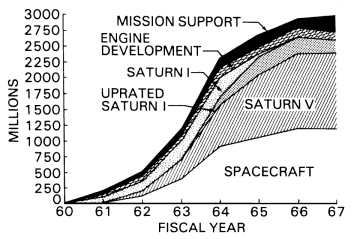

By 1966 Apollo had lost much of the emotional support of Congress and the public that had welled up five years earlier in the wake of the Soviet Vostoks. The drop was reasonable, since the successes of the Gemini and Saturn I programs had led many Americans to believe the space race with Russia had been won. Moreover, domestic and foreign commitments, made primarily in 1965, to President Johnson's "Great Society" and to Southeast Asia had placed more demands on tax dollars than had been foreseen. For fiscal 1967, NASA submitted a budget request of $5.58 billion, the President cut it to $5.012, and Congress chopped it to $4.968. Apollo came through virtually unscathed; but its follow-on, Apollo Applications, felt the weight of the Budget Bureau's ax.1

Apollo program funding through fiscal 1967, on a 1966 chart. "Uprated Saturn I," a name that did not stick, is the Saturn IB launch vehicle.
Obtaining funds for space exploration might be becoming more difficult, but most NASA officials had no time to worry about future programs. Apollo boilerplate flight tests had ended, and production spacecraft would soon fly atop the Saturn IB. Manned Spacecraft Center Director Robert Gilruth told Chris Kraft, Director for Flight Operations in Houston, to get his people started on the job ahead.
By January 1966, Kraft's group had drafted a preliminary "operations plan." In February it distributed a more complete version that pinpointed the responsibilities and functions of everyone connected with flights, beginning with Director Gilruth. The plan listed 19 specific documents, ranging from the "mission directive" prepared by Joseph Shea's Apollo office to the "postflight trajectory analysis" compiled by Kraft's own directorate, that would be essential in conducting a mission. Kraft also named John Hodge as flight director for AS-202 and AS-203. Kraft, himself, would direct AS-204, the first manned mission in the program.* 2
* Glynn S. Lunney had already been assigned to direct AS-201, scheduled to fly 26 February 1966.
1. Astronautics and Aeronautics, 1966: Chronology on Science, Technology, and Policy, NASA SP-4007 (Washington, 1967), pp. 23-24, 286, 328; NASA, "Transcript of Dr. [Joseph F.] Shea's Closing Remarks to the Apollo Industrial Team Seminar, October 29, 1966"; Robert F. Freitag, NASA OMSF, to Robert R. Gilruth, Dir., MSC, 25 March 1966, with enc., MSF Staff Paper, "Cost of Manned Lunar Landing," n.d.
2. George E. Mueller, NASA OMSF, to Gilruth, 20 Jan. 1966; George M. Low, Dep. Dir., MSC, to James C. Elms, OMSF, 25 March 1966; MSC Flight Ops. Div. (FOD), "Manned Spacecraft Center Apollo Program Development Plan," January 1966; Christopher C. Kraft, Jr., MSC, memo, "MSC Apollo Operations Plan," 3 Feb. 1966, with enc., FOD, "Manned Spacecraft Center Apollo Operations Plan," February 1966; Kraft memo, "Assignment of Flight Directors," 23 March 1966.